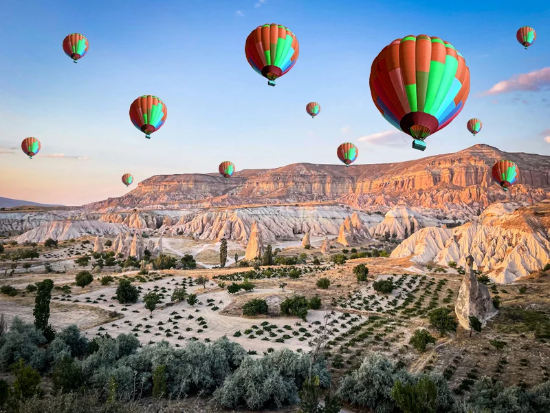
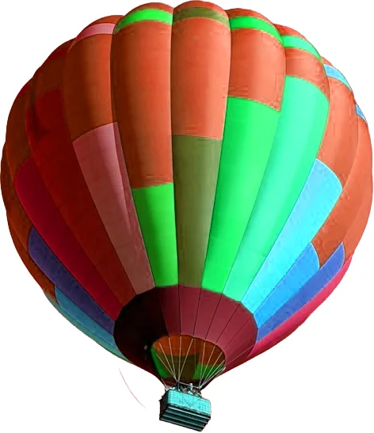

Fotoğraf Kompozisyonu
Kapadokya — Balon Kompozisyonu
Tek bir balondan oluşturduğum 12 bağlı Smart Object ile Kapadokya manzarasına derinlik kazandırdığım kompozisyon.
Adobe Photoshop · Onur Can Orhan · Kasım 2026

Smart Object
Kapadokya: tek kaynaktan 12 balon
Kapadokya manzarasına aynı Smart Object’in 12 örneğini yerleştirdim. Farklı ölçek ve opaklık değerleriyle yakındaki ve uzaktaki balonlar arasında derinlik oluşturdum.
Nasıl hazırladım?
Tek balonu dekupe edip Smart Object’e dönüştürdüm. Örneklerini balonlar grubunda topladım. Edit Contents ile kaynak içeriğe Hue/Saturation düzenlemesi uyguladığımda 12 örnek birlikte güncellendi. Orijinal balon katmanını gizli olarak korudum.
Smart Object örnekleri · Edit Contents · Hue/Saturation · Derinlik





Ortaya çıkan sonuç
Yakındaki balonları büyük, uzaktakileri küçük ve daha düşük opaklıkta yerleştirdim. Tek kaynaktaki renk değişikliği tüm balonlara yansıdığı için kompozisyonu topluca güncelleyebiliyorum.